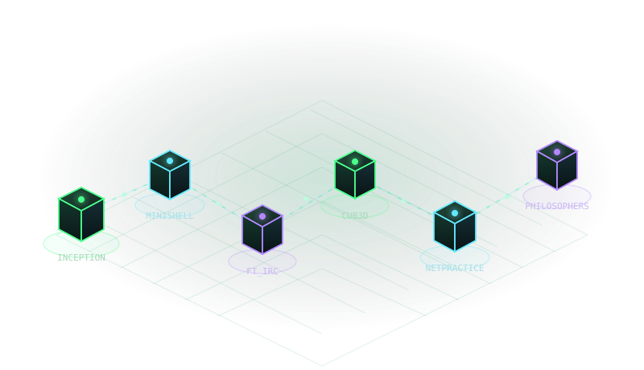

FIELD 001 / THE CAUSAL INSTRUMENTCANVAS 2D · DETERMINISTIC SYSTEM
EVERY SYSTEM BEGINS WITH A SIGNAL.
Nothing exists in isolation.
A small input. A chain of consequences. Explore the hidden mechanics of software.
NO LOADING SEQUENCE. JUST CAUSE & EFFECT.

+FIG. Ø.1 ONE SURFACE. SIX PERSPECTIVES. INFORMATION → STRUCTURE
01∞
u 0.000 / v 0.000SIGNAL AWAITS INPUT
CHANGE YOUR PERSPECTIVEEXPERIMENTAL PORTFOLIO / V.01
01 — ENTER THE SYSTEMALL EXPERIMENTS RUN LOCALLY · NO LIVE INFRASTRUCTURE
REALITY I / THE BIRTH OF COMPUTATION
One bit. A world of consequence.
01
Every cell follows the same small rule. The emerging structure has no blueprint. Change the rule and discover a different computational world.
The visual layer is unavailable. All experiment results remain readable below.
BOUNDED EDUCATIONAL MODEL
Read the computation +
01 / 06 PERSPECTIVES VISITEDDIFFERENT SYSTEMS. THE SAME QUESTION: WHAT HAPPENS NEXT?
THE FINAL CONVERGENCE
The boundary changes. The thinking connects.
A bit becomes a process. A process speaks across a network. A service gives that conversation structure. Geometry makes it visible. This interface brings it back to you.
Software engineering student. Systems curious. Backend focused.
I’m drawn to the hidden mechanics of software: network boundaries, service relationships, and the assumptions behind a reliable system.
My learning path includes the 1337 coding-school curriculum and ALX Software Engineering. This instrument turns that learning into experiments you can investigate.
Printable portfolio record. A verified CV file has not been supplied.
SYSTEMS
C · C++ · Linux
BACKEND
Java · Spring Boot REST APIs · PostgreSQL
INTERFACE
JavaScript · TypeScript React · HTML · CSS
DELIVERY
Docker · NGINX · Git
A workbench in progress, reflecting coursework and learning rather than equal depth in every tool.
Selected fieldwork
REAL PROJECTS. VISIBLE PRINCIPLES.
01 / CONTAINER INFRASTRUCTURE
Inception
Docker Compose connects NGINX, WordPress with PHP-FPM, and MariaDB. Bridge networking separates services; bind-backed volumes preserve site and database data.
A locally verified team application: React/Vite, an NGINX reverse proxy, NestJS gateway, TCP microservices, and PostgreSQL. Follow a simulated authenticated profile request.
Public source unavailable
03 / SYSTEMS PROGRAMMING
minishell
Parsing, processes, pipes, and redirections. A bounded browser model makes a pipeline’s intermediate output inspectable without executing host commands.
Coursework record
04 / REAL-TIME GEOMETRY
cub3d
A 2D grid becomes a first-person view through raycasting. The experiment exposes the map, ray intersections, perpendicular distance, and projected wall columns.
Coursework record
05 / NETWORKS & COMMUNICATION
NetPractice / ft_irc
Addresses and routes determine reachability. A TCP chat server connects clients through channels. Investigate subnet boundaries and a bounded channel fan-out model.
Coursework record
06 / CONCURRENCY & FOUNDATIONS
Philosophers / Libft / C++
Shared resources and coordination; reusable C building blocks for memory, strings, and lists; ten C++ modules progressing through classes, templates, and containers.
Coursework record
A note on evidence and simulations
Descriptions come from the existing portfolio record, the public Inception configuration, and an adjacent ft_transcendence team checkout. Coursework internals without source access are described at concept level. The experiments are educational models built for this portfolio, not the original C/C++ programs or live production systems. No scores or unverified achievements are added.